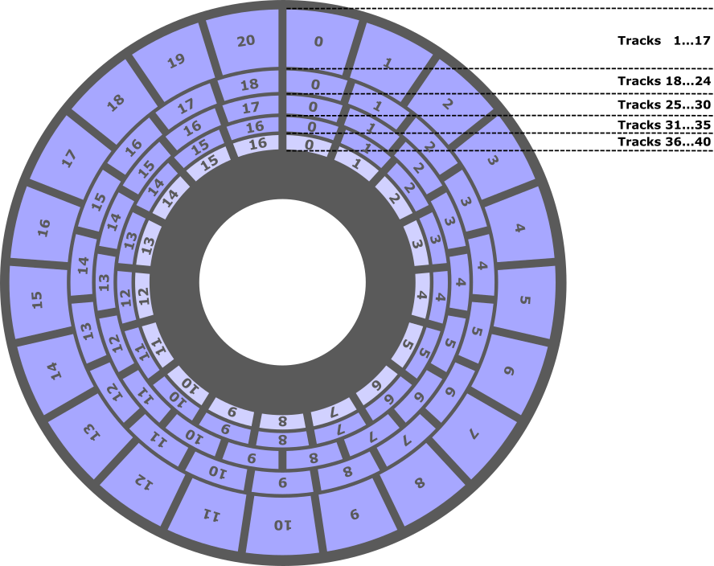
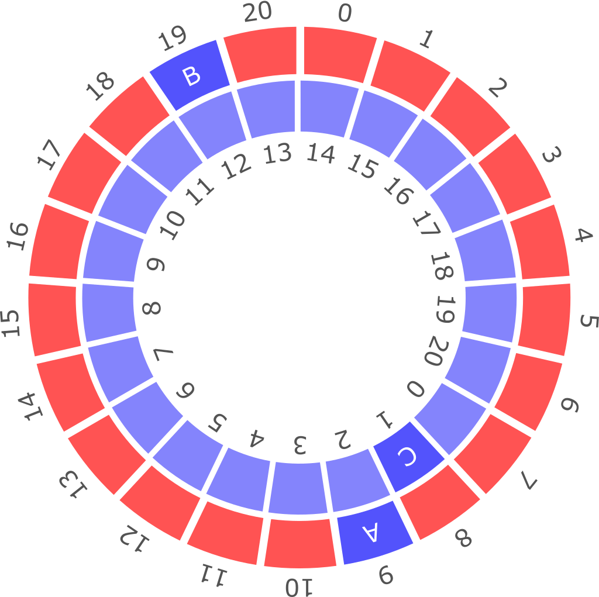
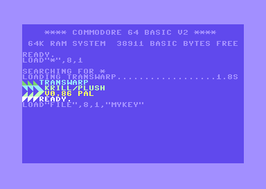
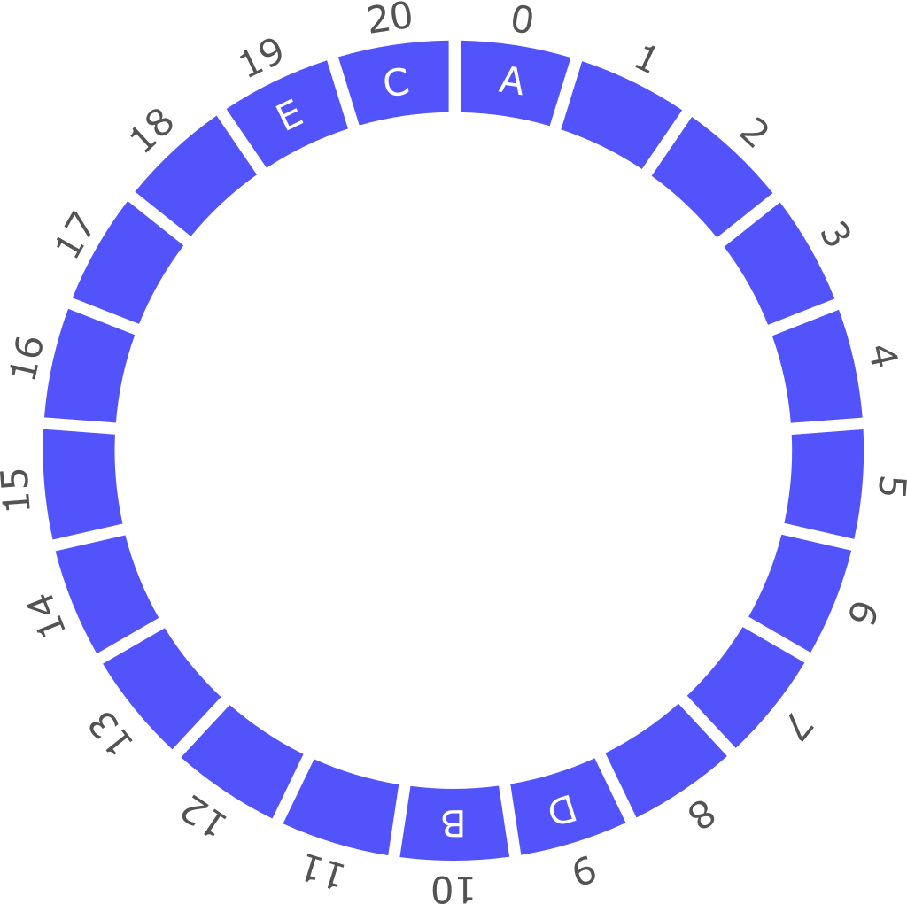

cc1541 Documentation
Introduction
cc1541 is a tool for creating Commodore floppy disk images in D64 (35 and 40 track), D71 or D81 format, providing a lot of control over the layout of the data on the disk. It also supports writing the file format for the Transwarp loader by Krill.

Schematic of a 5,25" floppy disk with the different speed zones: for simplification, the sectors are perfectly aligned here, which is usually not the case on real hardware because of the way the disk format routine works.

A more realistic view of a 5,25" floppy disk, with non-aligned tracks and slightly larger tail gaps at the end of a track.
cc1541 was initially written by JackAsser and has received many updates since then by Claus, Krill and Björn Esser. The program is provided under the terms of the MIT license. Please refer to section License for its terms and conditions. The public source code repository can be found here: Bitbucket Repository
For bug reports or feature requests, please feel free to reach out via one of the options in the support menu.
This documentation was created using iDoc by Harnish Design. Please find the iDoc license here.
General Usage
cc1541 is a command line executable, making it easily automatable using shell scripts and Makefiles, e.g., in an automated build chain.
Open a shell (e.g., the Windows Command Prompt or the macOS or Linux Terminal), navigate to the folder where the cc1541 binary is (or make sure it is in the path), and type cc1541 to display the command line help. The command line consists of "cc1541", followed by a series of command line switches with their respective arguments, and a disk image file as the last command line argument.
The output image file format is selected according to the file extension (.d64, .d71 or .d81; for unknown extensions, the D64 format is assumed.)
Typical usage examples are:
cc1541 image.d64lists the content of the disk image file "image.d64".cc1541 -f program -w file.prg image.d64adds the file "file.prg" to the disk image "image.d64" (or creates the image if it does not exist yet) using the name "program".cc1541 -f program1 -w file1.prg -f program2 -w file2.prg image.d64adds two files under the names "program1" and "program2".cc1541 -s 4 -f program -w file.prg image.d64writes a file with a dedicated sector interleave for a fastloader (the best value depends on the used fastloader and its configuration).cc1541 -f game -W game.prg -f "transwarp" -w "transwarp v0.86.prg" Transwarp-Game.d64creates a Transwarp disk image with the required boot file, which can be found as part of the cc1541 distribution package.cc1541 -T DEL -f ---------------- -L image.d64creates a DEL entry as a separator in the disk directory.
Command Line Switches
This section describes all command line switches and their parameters. A condensed version is printed when calling cc1541 -h
Disk Related
| Switch | Description |
|---|---|
| ‑n <diskname> | Set disk name |
| ‑i <id> | Set disk ID |
| ‑4 | Write 40 track D64 in Speed DOS format |
| ‑5 | Write 40 track D64 in Dolphin DOS format |
| ‑d <dirtrack> | Maintain a shadow directory |
| ‑g <filename> | Write an additional G64 output file |
| ‑H <message> | Write hidden BAM message |
| ‑p <track>,<sector>,<offset>,<filename> | Write binary patch to image |
| ‑V | Validate disk image to have CBM DOS format |
File Related
| Switch | Description |
|---|---|
| ‑w <filename> | Write local file to disk image |
| ‑f <name> | Directory name of next file to write |
| ‑T <filetype> | Filetype for next file |
| ‑P | Mark file as protected | ‑O | Mark file as open |
| ‑B <numblocks> | Use given value as file size in directory |
| ‑L | Create a directory entry without writing a file |
| ‑l <filename> | Second directory entry for a file |
| ‑N | Force creation of a new directory entry |
| ‑o | Disallow overwriting of files |
| ‑X <filename> | Extract file from disk image |
Track/Sector Control
| Switch | Description |
|---|---|
| ‑S <value> | Default sector interleave |
| ‑s <value> | Sector interleave for next file |
| ‑e | Start next file on empty track |
| ‑E | Try to fit file on single track |
| ‑r <track> | Restrict file to given track or higher |
| ‑b <sector> | Set start sector for the next file |
| ‑F <sector> | First sector on new track |
| ‑t | Use directory track for files |
| ‑u <value> | Reserve number of directory blocks when using ‑t |
| ‑x | Do not split files across directory track |
| ‑c | Write cluster optimized on D71 image |
Fastloader Specific
| Switch | Description |
|---|---|
| ‑M <numchars> | Number of filename characters to include in hash for Krill's loader |
| ‑m | Disable filename collision check for Krill's loader |
| ‑W <filename> | Write file in Transwarp format |
| ‑A <value> | Transwarp allocation strategy |
| ‑K <key> | Encryption key for Transwarp files |
Miscellaneous
| Switch | Description |
|---|---|
| ‑h | Print command line help |
| ‑v | Verbose output |
| ‑q | Quiet mode |
| ‑U <mapping> | Print PETSCII as Unicode |
| ‑R <level> | Restore deleted files |
| ‑a | Print the command line options that create the same directory as in the given image |
PETSCII Escape
CBM DOS uses PETSCII character encoding, which is only partly compatible to the ASCII set of characters that today's OSs are based on. Some command line switches that have a string as argument can use an escape mechanism to specify arbitrary PETSCII characters. The format is #XX, with XX specifying the hexadecimal number of the PETSCII character. Note that because "#" now has a special meaning, "#23" must be used to specify an actual "#" as character (as $23 is the PETSCII code for #).
In verbose mode (see -v), the escaped ASCII translation of all filenames in the directory is printed.
Example:
> cc1541 -f "1000#5c quest" -w file.prg image.d64
On a C64, the directory listing will look like this:

Alphabetic Index
-4
Use tracks 35-40 on a D64 image with Speed DOS BAM formatting. The additional block allocation table required for the tracks beyond 35 has an offset of $c0 on sector 0 of the directory track.
-5
Use tracks 35-40 on a D64 image with Dolphin DOS BAM formatting. The additional block allocation table required for the tracks beyond 35 has an offset of $ac on sector 0 of the directory track.
-a
Print the command line options that would create the same directory as the one in the given image. This is handy for directory art import.
-A <value>
Select the allocation strategy for Transwarp files. Setting 0 means that cc1541 allocates the files in the order given on the command line. Setting 1 will try to save disk space by reordering the Transwarp files.
-b <sector>
Set the start sector for the next file. If the sector is already used on the start track, use the next higher free sector.
This switch is not applicable for D81 or Transwarp files.
-B <numblocks>
Write the given value as file size in blocks to the directory for the next file. This switch cannot be applied to Transwarp files because these rely on this information in the directory being correct.
Example:
> cc1541 -B 1000 -w file.prg image.d64 Adding 1 files to new image image.d64 0 "cc1541 " 00 2a 1000 "file.prg" prg 664 blocks free.
Note how the number of free blocks printed at the bottom of the directory is still correct, as this is calculated from the block allocation table on the disk, and not from the number of blocks per directory entry.
-c
On D71 images, minimize track changes for the next file by writing cluster-optimized, i.e., alternating on both sides of the disk if possible.
-d <track>
Maintain a shadow directory. Krill's loader supports a directory which is not on the track, where CBM DOS expects it, but on a different one. This makes it invisible for CBM DOS and allows to freely manipulate the visible directory, e.g., for directory art. The value for this switch needs to be aligned with DIRTRACK in the loader configuration file and is recommended to be near the standard directory track (i.e., 17 or 19 for D64 images) to minimize seek times.
Example:
> cc1541 -d 17 -f loader -w loader.prg -f data -w data.prg image.d64 Adding 2 files to new image image.d64 0 "cc1541 " 00 2a 13 "loader" prg 13 "data" prg 636 blocks free. > cc1541 -T 0 -f data -L image.d64 Adding 1 files to existing image image.d64 1 out of 1 files exist and will be overwritten 0 "cc1541 " 00 2a 13 "loader" prg 649 blocks free.
The first call sets up all required files in both the standard and the shadow directory. The second call then sets the file type of file "data" to 0, effectively deleting it from the standard directory. But the loader can still access it, as it is still part of the shadow directory.
-e
Start next file on an empty track. This can have a performance advantage, as it minimizes the track changes during loading the file. The start sector on the empty track is the current sector plus interleave, unless specified otherwise using -b.
-E
Try to fit file on a single track. This is similar to -e, but small files will happily share a track with other files, so this might save some disk space. On the other hand, the interleave might not be ideal due to collisions with the used sectors, so read performance could be worse.
-f <name>
This specifies the filename to be used on the disk image for the next written file. The name will be truncated to the maximum number of 16 characters.
The argument of this command line switch supports the escape mechanism to specify hexadecimal PETSCII codes in a string.
Example:
> cc1541 -f "start" -w file.prg image.d64 Adding 1 files to new image image.d64 0 "cc1541 " 00 2a 16 "start" prg 648 blocks free.
CBM DOS has a trick up its sleeve: the use of PETSCII character $a0 (SHIFT-SPACE) allows to append characters in the directory after the closing quote.
Example:
> cc1541 -f "start#a0,8,1" -w file.prg image.d64 Adding 1 files to new image image.d64 0 "cc1541 " 00 2a 16 "start",8,1 prg 648 blocks free.
-F <value>
This switch specifies the first sector a file should use on its first track and after every track change after that. If the specified sector is not free, the next free sector after that is used. The default setting for this switch is 0.
For this file with the three blocks A, B and C, it makes sense to use -F 8, so that block C has the same interleave of 10 sectors.
A negative value has a special meaning for this switch and can be used to specify a track skew: instead of a fixed value, the last written sector in the current track plus the current sector interleave (see -s and -S) minus the given value is used. This makes sense under the assumption that tracks are aligned with a fixed sector offset (the track skew), which is usually roughly the case for real hardware.

For a track skew of 6, using -F -6 will take care for the correct sector interleave automatically and place C on sector 1.
After each file, the value falls back to the default value of 0. This switch cannot be used for D81 disk images.
-g <filename>
Write an additional G64 output file with the given name, a raw GCR binary representation of the disk.
-h
Print the command line help.
-H <message>
This writes a hidden message into a normally unused area of the disk inside of the BAM sector. There is no common standard where BAM messages are placed exactly, but it seems that an offset of $ab is used most, and that is where cc1541 will put it or try to detect it. For any input image, cc1541 will try to detect if a message is hidden there and if so, print it.
The argument of this command line switch supports the escape mechanism to specify hexadecimal PETSCII codes in a string.
Example:
> cc1541 -H "my secret message to the world" image.d64
Adding 0 files to new image image.d64
0 "cc1541 " 00 2a
664 blocks free.
BAM message: "my secret message to the world"
-i <id>
This sets the disk ID, which is displayed right of the disk name in the directory. The maximum length is 5 characters, any additional characters will be truncated. If not set, the default is "00 2a", as this is what CBM DOS will write per default.
The argument of this command line switch supports the escape mechanism to specify hexadecimal PETSCII codes in a string.
Example:
> cc1541 -i 12345 image.d64
Adding 0 files to new image image.d64
0 "cc1541 " 12345
664 blocks free.
-K <key>
Set an encryption key for Transwarp files, a string of up to 29 characters. This key can be passed to the load command as a fourth parameter on the C64 when Transwarp is loaded:

A wrong key will result in a ?LOAD ERROR. Note that encrypted files are listed as USR files in the directory. The file size in the directory is also encrypted, so it will not reflect the actual number of blocks the file occupies.
The argument of this command line switch supports the escape mechanism to specify hexadecimal PETSCII codes in a string.
Example:
> cc1541 -K "mykey" -W file.prg -w "transwarp 0.86.prg" image.d64 Adding 2 files to new image image.d64 0 "cc1541 " 00 2a 24 "file.prg" usr 32 "transwarp v0.86." prg 626 blocks free.
-l <filename>
This switch allows to create a second directory entry for a file that already exists on the disk or is given as part of the same command line. Wildcards "*" and "?" are supported for name matching, but need to be in quotes or escaped to avoid interpretation by the shell. It is required to set a separate filename in addition to this switch using -f.
The argument of this command line switch supports the escape mechanism to specify hexadecimal PETSCII codes in a string.
Example:
> cc1541 -f file -w file.prg -f duplicate -l file image.d64 Adding 2 files to new image image.d64 0 "cc1541 " 00 2a 13 "file" prg 13 "duplicate" prg 651 blocks free.
-L
This switch will create a directory entry without writing a file to the disk image. The start track and sector in the directory entry will both be 0. Track 0 is illegal (track counting on CBM DOS starts with 1), and trying to load such an entry on the C64 will fail with "?FILE NOT FOUND ERROR". The switch is intended to be used for directory art and requires a filename given with -f.
Example:
> cc1541 -f "----------------" -L image.d64 Adding 1 files to new image image.d64 0 "cc1541 " 00 2a 0 "----------------" prg 664 blocks free.
-m
Krill's loader, a flexible fast loading system, is using a hash that is calculated from the filename to identify files. cc1541 checks automatically if multiple filenames result in the same hash. This would make it impossible to load any of them except the first one with Krill's loader. In rare cases, this check can fail even for different filenames. If there is no requirement to support Krill's loader, the check can be disabled using this switch.
-M <numchars>
The maximum file length to include into the hash calculation for Krill's loader. Krill's loader, a flexible fast loading system, is using a hash that is calculated from the filename to identify files. To work correctly, the parameter for this switch and the loader option FILENAME_MAXLENGTH in Krill's loader must be set to the same value. The default for this setting is 16, taking the maximum possible CBM DOS file length into account.
Example:
> cc1541 -M 4 -f file1 -w file1.prg -f file2 -w file2.prg image.d64 Adding 2 files to new image image.d64 0 "cc1541 " 00 2a 13 "file1" prg 13 "file2" prg 638 blocks free. Hash of filename "file1" [$ea26] is not unique [$ea26] "file1" [$ea26] "file2" Hash of filename "file2" [$ea26] is not unique [$ea26] "file1" [$ea26] "file2" ERROR: Filename hash collision detected, image is not compatible with Krill's loader. Use -m to ignore this error.
-n <diskname>
This sets the disk name, which is displayed at the top of the directory. The maximum length is 16 characters, any additional characters will be truncated. If not set, the default is "cc1541".
The argument of this command line switch supports the escape mechanism to specify hexadecimal PETSCII codes in a string.
Example:
> cc1541 -n mydisk image.d64
Adding 0 files to new image image.d64
0 "mydisk " 00 2a
664 blocks free.
-N
Force creation of a new directory entry, even if a file with the same name exists already. This is mostly intended for directory art, because having two files with the same name means that the second file cannot be loaded. The flag needs to be provided per file.
Be aware that this switch implies the switch -m, and checks for hash collisions for Krill's loader are disabled.
Example:
> cc1541 -m -f "----------------" -L -N -f "----------------" -L image.d64 Adding 2 files to new image image.d64 0 "cc1541 " 00 2a 0 "----------------" prg 0 "----------------" prg 664 blocks free.
-o
This switch will exit cc1541 with an error, if an attempt is made to overwrite a file that exists on the disk image already. Without the switch, the file will simply be overwritten.
Example:
> cc1541 -w file.prg image.d64 Adding 1 files to new image image.d64 0 "cc1541 " 00 2a 16 "file.prg" prg 648 blocks free. > cc1541 -o -w file.prg image.d64 Adding 1 files to existing image image.d64 ERROR: Filename exists on disk image already and -o was set
-O
Mark next file as open (actually clears the closed flag in Bit 7 of the file type). Open files are signified by a * before the file type in the directory. Note that an open DEL file is used by CBM DOS to mark a free directory slot, so it will not be visible in the directory and the directory slot will be re-used when adding further files.
Example:
> cc1541 -O -w file.prg image.d64 Adding 1 files to new image image.d64 0 "cc1541 " 00 2a 16 "file.prg" *prg 648 blocks free.
-p <track>,<sector>,<offset>,<filename>
Write a binary patch at the given track, sector and offset onto the disk image. If the data needs more than one block, consecutive sectors and tracks will be used. All modified blocks are marked as used in the BAM.
Note that patches are applied before writing files. Block allocation for the files will therefore avoid the patched blocks.
Example:
> cc1541 -p 18,18,0,highscore.bin image.d64
-P
Mark next files as write protected. Write protected files are signified by a < behind the file type in the directory.
Example:
> cc1541 -P -w file.prg image.d64 Adding 1 files to new image image.d64 0 "cc1541 " 00 2a 16 "file.prg" prg< 648 blocks free.
-q
Minimize printouts, i.e., only print something for error cases.
-r <track>
Restrict next file blocks to the specified track or, if that track is full, to the next higher track that has space.
-R <level>
Try to restore deleted and formatted files. This can be done with different levels, that will successively find more potentially deleted files, but also likely create more false positives with trash data.
If it is impossible to restore the original file name, a file in the format "tXXsYY$ZZZZ" is created, with XX, YY and ZZZZ being the start track, start sector, and load address.
- Level 0: Only restore directory entries without touching any track/sector links.
- Level 1: Fix directory entries for files with valid track/sector chains.
- Level 2: Also add wild sector chains without any reference from the directory that have valid track/sector chains.
- Level 3: Also fix directory entries with invalid track/sector chains.
- Level 4: Also add and fix wild without any reference from the directory that have invalid track/sector chains.
- Level 5: Also add wild single blocks without any reference from the directory, that contain only zeros after the signaled sector length.
-s <value>
Sector interleave for the next file. The interleave value falls back to the default value set by -S after the first sector of the file that comes after next one. Not applicable for D81 images or Transwarp files.
-S <value>
This sets the default sector interleave. Reading from floppy disk usually happens in two steps: first one sector of GCR data is read from the disk and stored in a buffer in the disk drive. Then GCR decoding takes place, and the decoded data is transmitted over the serial interface. For CBM DOS (and most fast loaders), the second part needs longer than the first part. For this reason, loading performance is best, if successive blocks are written with several sectors between them, so that ideally when part 2 is finished, the next sector just passes by the read head. CBM DOS uses an interleave of 10, which means that successive blocks are written with a distance of 10 sectors. For this reason, the default value for this switch is 10.

Example, how the blocks A, B, C, D, E of a file are distributed on a track with default sector interleave.
This switch is not applicable for D81 images or Transwarp files.
-t
If a disk image becomes full, this switch allows to squeeze some more data in by also using the directory track for files. The switch -u allows to specify how many blocks should be left free on the directory track. Note that this switch will override -x.
For D71 images, track 53 is usually completely allocated, although only sector 0 is actually used for the second side BAM. If this switch is used during the creation of the D71 image, only sector 0 will be allocated, so 18 additional sectors can be used to store files.
-T <type>
Filetype for next file, allowed parameters are three-letter values from the table below, or a decimal number between 0 and 255. Default is PRG.
| Type | Description |
|---|---|
| PRG | Normal C64 program, the first two bytes specify the load address. |
| SEQ | Sequential data file. |
| USR | User file with application dependent format. |
| REL | Relative data file that allows random access to the data records. |
| DEL | Deleted file, only visible while it is still open. |
Example:
> cc1541 -T USR -w file.prg image.d64 Adding 1 files to new image image.d64 0 "cc1541 " 00 2a 16 "file.prg" usr 648 blocks free.
Here is a description of the respective bits for the numerical value:
- Bit 0-3: Filetype, 0 for DEL, 1 for SEQ, 2 for PRG, 3 for USR, 4 for REL, 5...15 illegal
- Bit 4: unused
- Bit 5: used during CBM DOS overwrite operation
- Bit 6: write protected flag, signified by a < behind the file type in the directory
- Bit 7: closed flag, open files are signified by a * behind the file type in the directory
Example:
> cc1541 -T 192 -w file.prg image.d64 Adding 1 files to new image image.d64 0 "cc1541 " 00 2a 16 "file.prg" del< 648 blocks free.
-u <numblocks>
When using -t to allow to store files on the directory track, this switch specifies the number of directory blocks to keep free, so that additional directory entries are still possible. This can be useful for directory art. The default setting for this switch is 2.
-U <mapping>
Print PETSCII as Unicode. This makes sense if a Unicode 13.0 font is installed, e.g., UNSCII. The parameter for this switch can be:
- 0: ASCII output
- 1: Upper case PETSCII output
- 2: Lower case PETSCII output
The output format can also be set globally by defining the environment variable CC1541UNICODE to one of the supported values, so the switch does not have to be set every time manually.
-v
Print verbose information about the disk image, e.g., a file allocation table, an overview of the block allocation, the filename hashes for Krill's loader, and the escaped ASCII filename for each directory entry.
-V
This switch enables a check if the given disk image is in valid CBM DOS format. Otherwise, it will display the first non-conformity, and exit with an error. In this case, the image will not be modified. The following checks are performed:
- The format specifier in the directory is $41 for D64 and D71, or $44 for D81
- The double-sided flag is 0 for D64 or $80 for D71
- The file type for each directory entry is one of PRG, SEQ, USR, REL or DEL
- No invalid track or sector references in the directory entries
- No invalid track or sector references in the track/sector chain for each file
- No collisions with other files or loops in the track/sector chain for each file
- The block allocation table is consistent with the blocks used by the files
-w <filename>
Write a local file to the disk image. If the disk filename is not set with -f, then the local filename is used, stripped off any preceding path and truncated to the maximum length of 16 characters.
Example:
> cc1541 -w file.prg image.d64
Adding 1 files to new image image.d64
0 "cc1541 " 00 2a
16 "file.prg" prg
648 blocks free.
-W <filename>
Write a local file to the disk image in Transwarp format. It is required to provide a Transwarp boot file as last file with -w, unless the image already contains such a file. A Transwarp boot file is part of the cc1541 distribution package using the name scheme "transwarp vX.Y.prg". A name for the directory entry of the Transwarp boot file can be provided with -f, but it is required to start with "transwarp".
Example:
> cc1541 -W file.prg -w "transwarp 0.86.prg" image.d64 Adding 2 files to new image image.d64 0 "cc1541 " 00 2a 21 "file.prg" prg 32 "transwarp v0.86." prg 626 blocks free.
-x
Per default, cc1541 will split a file if needed, so that parts of it are below the directory track and parts of it are above. This allows to use the space on the disk more efficiently but might have a small speed impact when loading the split file. This switch prohibits such a split.
-X <filename>
Extract files from the disk image. Wildcards "*" and "?" are supported and all files that match will be extracted.
Note that for Transwarp files, the boot file will be extracted instead.
Example:
> cc1541 -X "p*" image.d64 Adding 0 files to existing image image.d64 Extracting program1.prg Extracting program2.prg 0 "cc1541 " 00 2a 13 "program1" prg 13 "program2" prg 13 "data" prg 625 blocks free.
Building
cc1541 can easily be built from the source code distribution package, e.g., for OSs or platforms that are not included in the binary distribution package. Two build systems are supported: make and Microsoft Visual Studio. For make, there are two relevant targets included:
| all | This will build the command line tool itself |
| test | This will build and execute the test suite |
It is advisable to run the test suite to make sure that the build of cc1541 works as expected.
For Visual Studio, open the solution file cc1541.sln. It contains two projects, again one for the tool itself and one for the test suite.
Changelog
v4.2
- -X switch added to allow extraction of files from images. For Transwarp files, the transwarp boot loader will be extracted instead.
- -p switch added to write arbitrary data directly at a certain place on the disk.
- -N now implies -m to avoid duplicate hash errors per default.
- -l now allows to use wildcards * and ?.
- Per default, complete track 53 is reserved for D71 now, just as in the original format routine. This can be overriden by -t during the creation of the D71 image. Thanks to Martin Thierer for the help!
- Hex escapes now allow both upper case and lower case.
- In verbose mode, filenames are printed with escape characters now.
- -a switch avoids hex escapes now where possible.
- Bugfix: The display of free blocks was utterly wrong for D71, thanks to Martin Thierer for the fix!
- Bugfix: Validate did not work for D71, thanks to Martin Thierer for the fix! It also works for D81 now.
- Bugfix: -c resulted in "disk full" error for non-D71, it is now rejected instead.
- Bugfix: validation would complain about looped t/s chains when it was actually a collision between different t/s chains.
- Bugfix: the default disk id "00 2a" now has a shift-space in the middle, just as in the original format routine.
v4.1
- Per default, Transwarp files will now be allocated such that less disk space is wasted. Old behavior can still be enabled with -A 0.
- Command line options -s and -b are now rejected for Transwarp files instead of being silently ignored.
- Unicode printout can now be configured with environment variable CC1541UNICODE, using same values as for -U switch.
- Bugfix: the last allocated track for Transwarp files was not checked to be free, sometimes resulting in unexpected write errors.
- Bugfix: mixing Transwarp and normal files would often leave parts of the disk unallocated, so that less data than expected would fit onto a disk.
- Bugfix: verbose file allocation printout would sometimes print garbage for filenames or block numbers
v4.0
- The default handling for large tail gaps has been removed, as it does not provide any advantage and was only there to be as close as possible to CBM DOS behavior. In fact, it slows down fast loaders. This warrants a major version number increase.
- -H switch added to set BAM messages at BAM offset $ab
- -F with negative values now specifies a track skew
- -B cannot be used with Transwarp files anymore, as the loader relies on correct block sizes in the directory
- Bugfix: the BAM allocation for SPEED DOS and DOLPHIN DOS was wrong (mixed up between the two and shifted by 4 bytes)
- Bugfix: Data from unused blocks could leak into the last block of a new file behind the actual file data
v3.4
- Support for Transwarp 0.86 and later
- Command line option -R added for restoring deleted or formatted files
- -L switch added to create directory entries without writing a file
- -a switch added to print a cc1541 command line that re-creates the directory art of the given disk image
- -T now also allows a number as parameter
- Files with file type DEL will now actually be written, use -L to avoid that
- Improved verbose allocation printout
- More robustness against invalid t/s links
- Added support for underscore in PETSCII filenames
- Bugfix: no endless loops for cyclic directory chains anymore
v3.3
- Transwarp encoding added
- Verbose mode displays file allocation on unmodified images
- Optimized non-standard interleave scheme
- Added Unicode printout option for PETSCII, special thanks to Jonas Minnberg for helping with Linux support and inverse characters!
- Output file is not touched when no change is requested
- Bugfix: Fixed crash on write protected output file
- Bugfix: Spacing in directory printout was not correct when file size is more than 999 blocks
v3.2
- -N switch added to allow duplicate file names
- Trying to create loop file with the same name as the referenced file now throws an error, if not -N is also specified
- Changed default next file first sector on new track to 0 to align with Commodore DOS
- Interleave violations are now shown in block allocation printout
- Block allocation for loop files is not displayed anymore when referenced file was also written
- Bugfix: Fixed file index printout for block allocation
- Bugfix: Correct interleave is now displayed for loop files when referenced file was also written
v3.1
- Bugfix: overwriting files did not work correctly when there was a free slot in the directory before the file to overwrite
- Bugfix: Filetype, open and protected flags were not reset after writing a file
- Bugfix: default disk name and id were wrong in command line help
v3.0
- ASCII to PETSCII conversion added, this breaks backward compatibility (and therefore warrants a major version increase)!
- Support for D81 images
- Default printout is now a full directory similar to how it would be displayed on a Commodore machine
- -v switch added for verbose output of file and block allocation
- -M switch added to specify number of characters for filename hash calculation for latest Krill loader
- -m switch added to skip filename collision check
- -B switch added to allow setting the displayed file size
- -o switch added to prevent overwriting of existing files on an image
- -V switch added to validate images before editing them
- -T switch added to allow setting the file type
- -O switch added to allow setting the open flag
- -P switch added to allow setting the protected flag
- Hex escapes are now also allowed for disk name and ID
- When no disk file name is provided, only the base name of the input file is used as disk file name instead of the full path
- Bugfix: fixed memory access issue for filenames with 16 letters
- Bugfix: fixed endless loop when reaching track 53 on a D71
- Bugfix: fixed that (shadow) directory track would be used for data when the shadow directory is a neighbor of the actual directory
- Bugfix: G64 output is now an optional additional output using -g, avoiding the utterly broken reading of G64 files
- Bugfix: loop files have actual file size per default instead of 0
- Bugfix: printouts to stderr and stdout are more consistent now
v2.0
- The first version with a release number
- All existing modifications consolidated (hopefully)
- G64 output dependent on output file name instead of a source code define
- Converted to ANSI C99
- MSVC build files added
- getopt removed
- Simple test suite added
- Bugfix: hex escape was not considered for file overwrite detection
- Bugfix: first sector per track was ignored for track 1
- Bugfix: default sector interleave was ignored for first file
License
Copyright (c) 2008-2024 JackAsser, Krill, Claus, Björn Esser
Permission is hereby granted, free of charge, to any person obtaining a copy of this software and associated documentation files (the "Software"), to deal in the Software without restriction, including without limitation the rights to use, copy, modify, merge, publish, distribute, sublicense, and/or sell copies of the Software, and to permit persons to whom the Software is furnished to do so, subject to the following conditions:
The above copyright notice and this permission notice shall be included in all copies or substantial portions of the Software.
THE SOFTWARE IS PROVIDED "AS IS", WITHOUT WARRANTY OF ANY KIND, EXPRESS OR IMPLIED, INCLUDING BUT NOT LIMITED TO THE WARRANTIES OF MERCHANTABILITY, FITNESS FOR A PARTICULAR PURPOSE AND NONINFRINGEMENT. IN NO EVENT SHALL THE AUTHORS OR COPYRIGHT HOLDERS BE LIABLE FOR ANY CLAIM, DAMAGES OR OTHER LIABILITY, WHETHER IN AN ACTION OF CONTRACT, TORT OR OTHERWISE, ARISING FROM, OUT OF OR IN CONNECTION WITH THE SOFTWARE OR THE USE OR OTHER DEALINGS IN THE SOFTWARE.